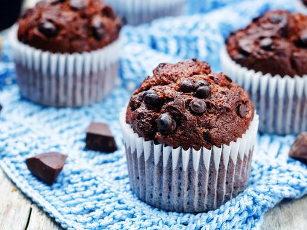

Recept za muffine
Namjernice:
- 250 g glatkog brašna
- 180 g šećera
- 2 žlice kakaa
- 1/2 žličice sode bikarbone
- 1 prašak za pecivo
- prstohvat soli
- vanilin šećer
- 180 g čokolade za kuhanje
- 90 ml ulja
- 250 ml mlijeka
- 4 jaja
Priprema
U jednu posudu se prvo stave glatko brašno, šećer, kakaao, soda bikarbona, prašak za pecivo, sol i vanilin šećer. To se sve zajedno treba pomiješati. Zatim usitnite čokoladu i dodajte ju u smjesu. Po želji možete dodati bademe, lješnjake, orahe, grožđice, itd.
U drugu posudu ubacite jaja i izmutite ih električnim mikserom. Smjesi dodajte ulje i mlijeko te sve promiješajte rukom.
U mokru smjesu plako dodavajte suhu smjesu iz prethodne posude. Polako izmiješajte te dvije smjese.
Dobivenu smjesu žlicom stavljajte u papirnate košarice
Smjesu u košaricama je potrebno peči 20 minuta na temperaturi od 200°C.
Uživajte u dobivenim mmuffinima!

| Vrsta muffina |
poveznica za recept |
| vanilija mufin |
link |
| red velvet muffin |
link |
| muffin s borovnicama |
link |
Izvor:
Coolinarka, čokoladni muffini